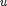
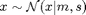

concat.m
Summary: Compute a control signal  from a state distribution . Here, the predicted control distribution and its derivatives are computed by concatenating a controller "con" with a saturation function "sat", such as gSat.m.
function [M, S, C, dMdm, dSdm, dCdm, dMds, dSds, dCds, dMdp, dSdp, dCdp] ...
= conCat(con, sat, policy, m, s)Example call: conCat(@congp, @gSat, policy, m, s)
Input arguments:
con function handle (controller) sat function handle (squashing function) policy policy structure .maxU maximum amplitude of control signal (after squashing) m mean of input distribution [D x 1] s covariance of input distribution [D x D]
Output arguments:
M control mean [E x 1] S control covariance [E x E] C inv(s)*cov(x,u) [D x E] dMdm deriv. of expected control wrt input mean [E x D] dSdm deriv. of control covariance wrt input mean [E*E x D] dCdm deriv. of C wrt input mean [D*E x D] dMds deriv. of expected control wrt input covariance [E x D*D] dSds deriv. of control covariance wrt input covariance [E*E x D*D] dCds deriv. of C wrt input covariance [D*E x D*D] dMdp deriv. of expected control wrt policy parameters [E x P] dSdp deriv. of control covariance wrt policy parameters [E*E x P] dCdp deriv. of C wrt policy parameters [D*E x P]
where P is the total number of policy parameters
Copyright (C) 2008-2013 by Marc Deisenroth, Andrew McHutchon, Joe Hall, and Carl Edward Rasmussen.
Last modified: 2012-07-03
Contents
High-Level Steps
- Compute unsquashed control signal
- Compute squashed control signal
function [M, S, C, dMdm, dSdm, dCdm, dMds, dSds, dCds, dMdp, dSdp, dCdp] ... = conCat(con, sat, policy, m, s)
Code
maxU=policy.maxU; % amplitude limit of control signal E=length(maxU); % dimension of control signal D=length(m); % dimension of input % pre-compute some indices F=D+E; j=D+1:F; i=1:D; % initialize M and S M = zeros(F,1); M(i) = m; S = zeros(F); S(i,i) = s; if nargout < 4 % without derivatives [M(j), S(j,j), Q] = con(policy, m, s); % compute unsquashed control signal v q = S(i,i)*Q; S(i,j) = q; S(j,i) = q'; % compute joint covariance S=cov(x,v) [M, S, R] = sat(M, S, j, maxU); % compute squashed control signal u C = [eye(D) Q]*R; % inv(s)*cov(x,u) else % with derivatives Mdm = zeros(F,D); Sdm = zeros(F*F,D); Mdm(1:D,1:D) = eye(D); Mds = zeros(F,D*D); Sds = kron(Mdm,Mdm); X = reshape(1:F*F,[F F]); XT = X'; % vectorized indices I=0*X;I(j,j)=1; jj=X(I==1)'; I=0*X;I(i,j)=1;ij=X(I==1)'; ji=XT(I==1)'; % 1. Unsquashed controller -------------------------------------------------- [M(j), S(j,j), Q, Mdm(j,:), Sdm(jj,:), dQdm, Mds(j,:), ... Sds(jj,:), dQds, Mdp, Sdp, dQdp] = con(policy, m, s); q = S(i,i)*Q; S(i,j) = q; S(j,i) = q'; % compute joint covariance S=cov(x,v) % update the derivatives SS = kron(eye(E),S(i,i)); QQ = kron(Q',eye(D)); Sdm(ij,:) = SS*dQdm; Sdm(ji,:) = Sdm(ij,:); Sds(ij,:) = SS*dQds + QQ; Sds(ji,:) = Sds(ij,:); % 2. Apply Saturation ------------------------------------------------------- [M, S, R, MdM, SdM, RdM, MdS, SdS, RdS] = sat(M, S, j, maxU); % apply chain-rule to compute derivatives after concatenation dMdm = MdM*Mdm + MdS*Sdm; dMds = MdM*Mds + MdS*Sds; dSdm = SdM*Mdm + SdS*Sdm; dSds = SdM*Mds + SdS*Sds; dRdm = RdM*Mdm + RdS*Sdm; dRds = RdM*Mds + RdS*Sds; dMdp = MdM(:,j)*Mdp + MdS(:,jj)*Sdp; dSdp = SdM(:,j)*Mdp + SdS(:,jj)*Sdp; dRdp = RdM(:,j)*Mdp + RdS(:,jj)*Sdp; C = [eye(D) Q]*R; % inv(s)*cov(x,u) % update the derivatives RR = kron(R(j,:)',eye(D)); QQ = kron(eye(E),[eye(D) Q]); dCdm = QQ*dRdm + RR*dQdm; dCds = QQ*dRds + RR*dQds; dCdp = QQ*dRdp + RR*dQdp; end